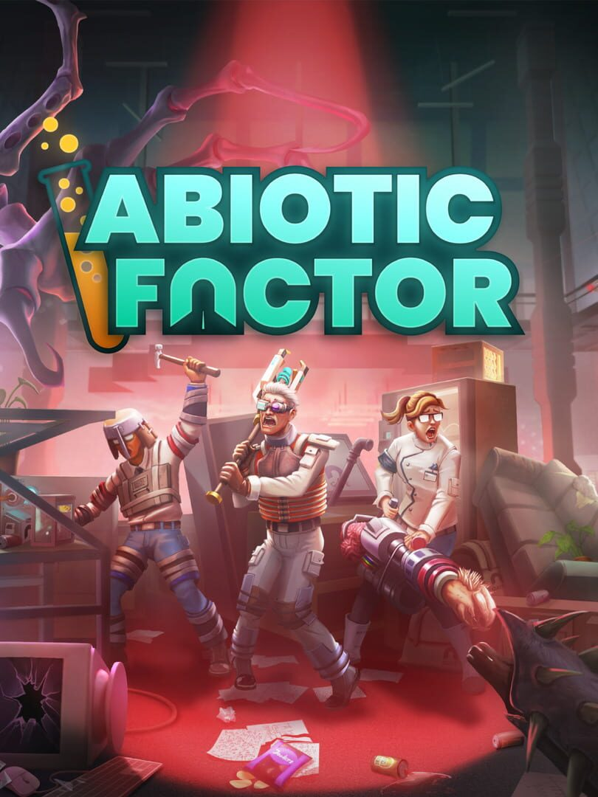

Abiotic Factor
Abiotic Factor
Details
|  | |
| Playtime | 4h 22m 0s |
| Last Activity | 2025-09-06 1:03:53 |
| Added | 2025-08-24 15:32:26 |
| Modified | 2025-08-24 15:32:41 |
| Completion Status | Played |
| Library | Steam |
| Source | Steam |
| Platform | |
| Release Date | 2025-07-22 |
| Community Score | 75 |
| Critic Score | 92 |
| User Score | |
| Genre | Adventure Indie Role-playing (RPG) Shooter Simulator |
| Developer | Deep Field Games |
| Publisher | Playstack |
| Feature | Co-Operative Multiplayer Single Player |
| Links | Uknown Uknown Uknown Uknown Uknown Uknown Uknown Uknown Uknown Uknown Uknown |
| Tag | |
Description
 Home to the world's greatest minds, GATE operates a global network of secretive research laboratories, spanning every field of scientific study - and the realms beyond.
Home to the world's greatest minds, GATE operates a global network of secretive research laboratories, spanning every field of scientific study - and the realms beyond.
As a GATE employee you extend the bounds of human knowledge, and seek to explain the unexplainable - including anomalies and paranormal entities: from gravity-distorting artifacts to supernatural creatures with an unbridled instinct for violence. Safety, security, and secrecy are of the utmost importance… usually.
After a catastrophic containment breach, your workplace has become a cosmic battle zone: anomalous entities are on the loose, enemies from other dimensions are invading via portals, and an arcane military sect - known as The Order - is targeting personnel and entities indiscriminately, aiming to seize artifacts and put an end to the chaos.
Containment procedures have failed and help isn’t on the way. Stranded miles beneath the surface, it’s up to you and your fellow scientists to band together, plan your escape, and make this underground complex your new home - for now.
 Abiotic Factor brings a 90’s sci-fi twist and rich character progression to the multiplayer open world survival crafting genre. Up to 6 players can choose their PhDs, build their scientist, gear up, and explore a massive subterranean complex, filled with supernatural artifacts, transdimensional foes, and science experiments gone awry.
Abiotic Factor brings a 90’s sci-fi twist and rich character progression to the multiplayer open world survival crafting genre. Up to 6 players can choose their PhDs, build their scientist, gear up, and explore a massive subterranean complex, filled with supernatural artifacts, transdimensional foes, and science experiments gone awry.
 Between alien threats hunting their next meal, trigger happy soldiers, and the world’s most advanced robotic security forces attacking personnel working overtime, there’s no shortage of danger. As a scientist, fighting isn’t your forte, so you’ll need to put your PhD to work to outwit your opponents: craft ingenious and outlandish tools, weapons and gear, from simple nets and wooden bats to laser-cannons and elaborate traps - everything your big science brain can muster!
Between alien threats hunting their next meal, trigger happy soldiers, and the world’s most advanced robotic security forces attacking personnel working overtime, there’s no shortage of danger. As a scientist, fighting isn’t your forte, so you’ll need to put your PhD to work to outwit your opponents: craft ingenious and outlandish tools, weapons and gear, from simple nets and wooden bats to laser-cannons and elaborate traps - everything your big science brain can muster!
 Make yourself at home - you’re here for the long haul. Scavenge resources from vacant offices and empty labs, raid vending machines, and steal company property to build a new base of operations as you explore the facility. When it’s time for a change of scenery, pack up your belongings and move them across the facility using handcarts, forklifts, SUVs, teleporters, and more.
Make yourself at home - you’re here for the long haul. Scavenge resources from vacant offices and empty labs, raid vending machines, and steal company property to build a new base of operations as you explore the facility. When it’s time for a change of scenery, pack up your belongings and move them across the facility using handcarts, forklifts, SUVs, teleporters, and more.
 Don your lab coat and earn your PhD: from Phytogenetic Botanist to Defense Analyst and Archotechnic Consultant (and many, many more), each with its own advantages essential to survival. Combine traits and skills, then level up to earn perks and abilities with your fellow scientists to forge a formidable scientific force.
Don your lab coat and earn your PhD: from Phytogenetic Botanist to Defense Analyst and Archotechnic Consultant (and many, many more), each with its own advantages essential to survival. Combine traits and skills, then level up to earn perks and abilities with your fellow scientists to forge a formidable scientific force.
 Working at GATE may have been a dream job, but dying here wasn’t part of your five year plan. Explore this massive underground facility as well as many worlds beyond and take full advantage of the most advanced technology unknown to mankind in this interdimensional sci-fi adventure!
Working at GATE may have been a dream job, but dying here wasn’t part of your five year plan. Explore this massive underground facility as well as many worlds beyond and take full advantage of the most advanced technology unknown to mankind in this interdimensional sci-fi adventure!